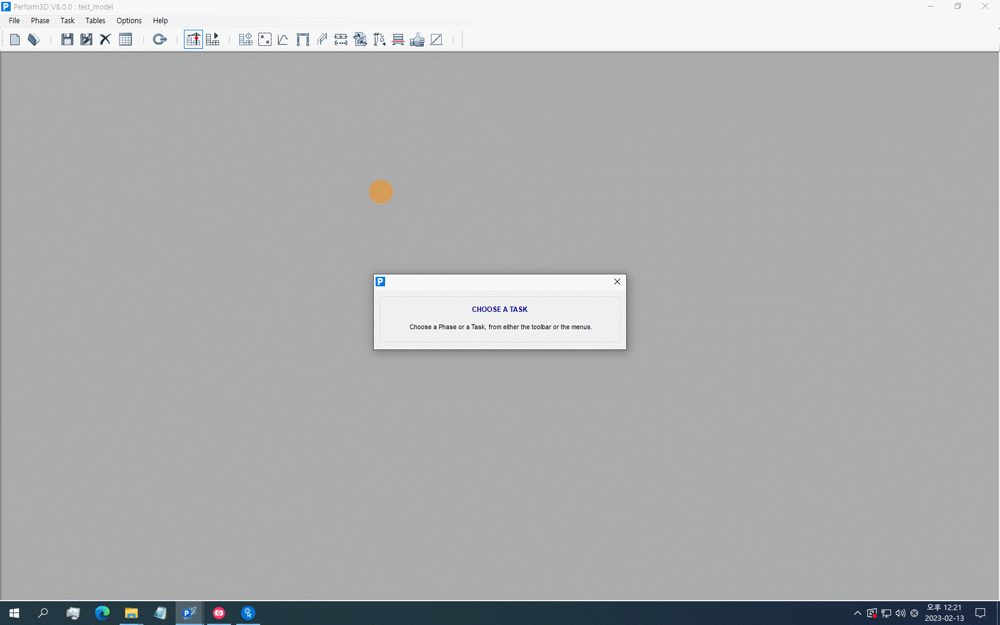
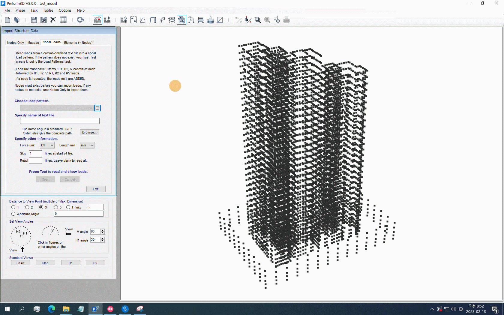
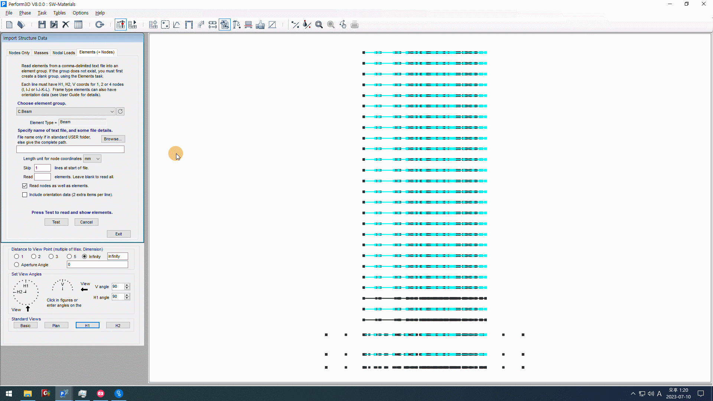
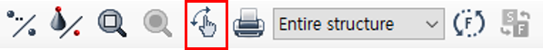

탄성설계 모델 Import#
성능설계 모델은 Perform-3D로 직접 모델링할 수 있지만, 빠르고 편리한 모델링을 위하여 Midas Gen 모델(레퍼런스 모델)과 Data Conversion Sheets의 정보를 Import하여 모델링할 수 있습니다.
파일 변환 (csv 파일 생성)#
첫 번째 절차는 Midas Gen 모델의 정보를 Perform-3D에서 읽어들일 수 있는 파일로 변환하는 것입니다.
변환이 가능한 정보는 Data Conversion Sheets 작성 장에서 모두 입력되었으므로,
PBD_p3d를 통해 Data Conversion Sheets의 정보를 Perform-3D에서 읽을 수 있는 파일 형식인 .csv으로 변환합니다.
What to do
PBD_p3d를 실행합니다.
Data Conversion (Excel Sheets)에 Data Conversion Sheets의 경로를 입력합니다.
아래의 빨간 상자에 있는 체크박스들 중에서 Import를 원하는 항목들을 체크합니다. Nodal Loads를 Import하는 경우, Dead Load Name과 Live Load Name에 각각 Midas Gen에서 사용하였던 고정하중, 활하중 이름을 입력합니다.

Import를 클릭합니다. Import가 완료되면 옆의 상태창에
Completed!가 표시됩니다. 또한 Data Conversion Sheets가 위치하는 경로에 아래와 같이 선택한 항목들의.csv형식 파일이 생성됩니다.

경고
Analysis Results (Excel Sheets)는 Import 단계에서는 사용되지 않으므로 입력하지 않아도 무방합니다.
Nodal Loads를 Import할 때, 입력된 고정하중과 활하중 이름을 포함하는 모든 하중을 불러온다는 사실에 유의합니다. (ex. 입력된 하중 이름을 포함하지만 Import할 필요가 없는 하중은 Midas Gen에서 미리 이름을 변경합니다.)
고정하중과 활하중 이름에는 띄어쓰기를 사용할 수 없습니다.
Perform-3D 실행#
Perform-3D로 새 성능설계 모델 파일을 만들고, 앞서 생성한 csv 파일을 Import합니다. 새 성능설계 모델 파일은 새 파일을 생성하여 성능설계 모델의 모델링을 시작할 수도 있지만,
참고
Perform-3D는 Midas Gen과 같이 단일 파일( .mgb )로 생성 또는 저장되는 것이 아니라, 폴더 형태로 생성 또는 저장됩니다.
따라서 Perform-3D 파일을 Load하는 경우, 파일이 아닌 폴더를 선택하여 Load합니다.
What to do
Perform-3D를 실행한 후, Start a New Structure를 클릭합니다.

Structure Name(파일명), Location of STRUCTURES folder(파일 경로), Structure Description(파일 설명) 등을 입력합니다. 파일명은 영문 또는 숫자로, 띄어쓰기 없이 입력해야 합니다.

단위는 단위 설정 장에 따라 \(kN, mm\)로 설정합니다.
Minimum spacing between nodes는 \(50 mm\)로 설정합니다.
설정이 완료되면 OK를 클릭합니다.

참고
일반적으로는 이와 같이 Start a New Structure를 클릭하여 새 성능설계 모델 파일을 생성하지만, 공동주택 성능설계 프로젝트와 같이 여러 동을 모델링해야하는 경우, 템플릿을 만들어서 사용하면 더욱 빠르고 편리하게 성능설계 모델 파일을 생성할 수 있습니다. 프로젝트에서 공통적으로 적용되는 정보(단위, 노드 간 최소 간격, 재료 정보 등)은 템플릿에 미리 입력할 수 있으므로, 템플릿을 사용한다면 앞으로 소개될 몇몇 과정은 생략이 가능합니다.
Import Nodes#
What to do
Nodes를 Import하기 위해 Import/Export Structure Data을 클릭하고, 생성된 창에서 Import를 클릭합니다.
 Nodes Only 탭을 클릭한 뒤, Specify name of text file에 앞서 생성한
Node.csv파일의 경로를 입력합니다.
입력 후 Test - 확인을 클릭하면 아래와 같이 Import할 Nodes가 표시됩니다.

OK를 클릭하여 Import를 완료합니다.


Import Masses#
What to do
Nodes를 클릭하고 생성된 창에서 Masses 탭을 클릭합니다. Mass Pattern을 만들기 위해 New를 클릭합니다.
Enter pattern name에
Mass(또는 사용자가 원하는 이름)를 입력한 후, OK를 눌러 Mass Patter 생성을 완료합니다.
Masses를 Import하기 위해 Import/Export Structure Data 탭을 클릭하고, 생성된 창에서 Import를 클릭합니다.
Masses 탭을 클릭한 뒤, Choose mass pattern에서 방금 생성한(또는 사용자가 원하는) Mass Pattern을 선택합니다. Specify name of text file에 앞서 생성한
Mass.csv파일의 경로를 입력합니다.
입력 후 Test - 확인을 클릭하면 아래와 같이 Import할 Masses가 표시됩니다.

OK를 클릭하여 Import를 완료합니다.


Import Elements#
What to do
Elements를 클릭하고, Elements Group을 만들기 위해 생성된 창에서 New를 클릭합니다.
 먼저 연결보를 Import하기 위해 연결보(Coupling Beam) 그룹을 생성합니다. Element Type에서
Beam을 선택한 후, Group Name에C.Beam(또는 사용자가 원하는 이름)을 입력합니다.
OK를 눌러 연결보 그룹 생성을 완료합니다.
같은 방법으로 연결보 외의 Import할 Elements와 Gages 그룹도 생성합니다.
- 연결보
Element Type:
Beam/ Group Name:C.Beam- 일반보
Element Type:
Beam/ Group Name:G.Beam- 탄성보
Element Type:
Beam/ Group Name:E.Beam- Imbedded Beam
Element Type:
Beam/ Group Name:I.Beam- 일반기둥
Element Type:
Column/ Group Name:G.Column- 탄성기둥
Element Type:
Column/ Group Name:E.Column- 벽체
Element Type:
Shear Wall/ Group Name:S.Wall- 지하외벽
Element Type:
Shear Wall/ Group Name:B.Wall- 벽체 회전각 게이지
Element Type:
Deformation Gage/ Group Name:WR/ Gage Type:Wall type, rotation or shear- 벽체 축변형률 게이지
Element Type:
Deformation Gage/ Group Name:AS/ Gage Type:Bar type, axial strain
버전 Beta부터 폐지됨: 보, 기둥 회전각 게이지는 더 이상 모델링하지 않습니다.

Import/Export Structure Data 탭을 클릭하고, 생성된 창에서 Import를 클릭합니다.
Elements (+ Nodes) 탭을 클릭한 뒤, Choose element group에서 C.Beam(또는 사용자가 지정한 연결보 그룹)을 선택합니다. Specify name of text file에 앞서 생성한
Beam.csv파일의 경로를 입력합니다.
입력 후 Test - 확인을 클릭하면 아래와 같이 Import할 Beams가 표시됩니다.

OK를 클릭하여 Import를 완료합니다.
C.Beam 그룹에
Beam.csv파일을 Import 에는 연결보 뿐만아니라 모델에 사용된 모든 보(일반보, 탄성보)에 대한 정보가 포함되어있습니다. 따라서 처음에 Import한 부재들을 해당하는 각 그룹으로 나누어주는 작업이 필요합니다.그룹을 변경하기 위해 Elements 탭을 클릭하고 생성된 창에서 C.Beam 그룹을 선택합니다.
 Change Group 탭을 선택하고, 부재를 이동시킬 그룹을 선택합니다. 해당되는 부재를 선택한 후, Move를 클릭하면 그룹 변경이 완료됩니다.
같은 방법으로 나머지 부재들을 Import합니다. 또한 Column과 Wall은 Import 이후에 아래와 같이 그룹을 나누어 줍니다.
- Column
G.Column, E.Column
- Wall
S.Wall, B.Wall


참고
Perform-3D에서 뷰를 회전/이동하는 방법은 크게 두 가지가 있습니다.
Dynamic Rotation 과 마우스 휠을 사용하여 자유롭게 뷰를 움직일 수 있습니다.
 View 창을 이용해 원하는 각도로 뷰를 회전시킬 수 있습니다.

{kind=link}